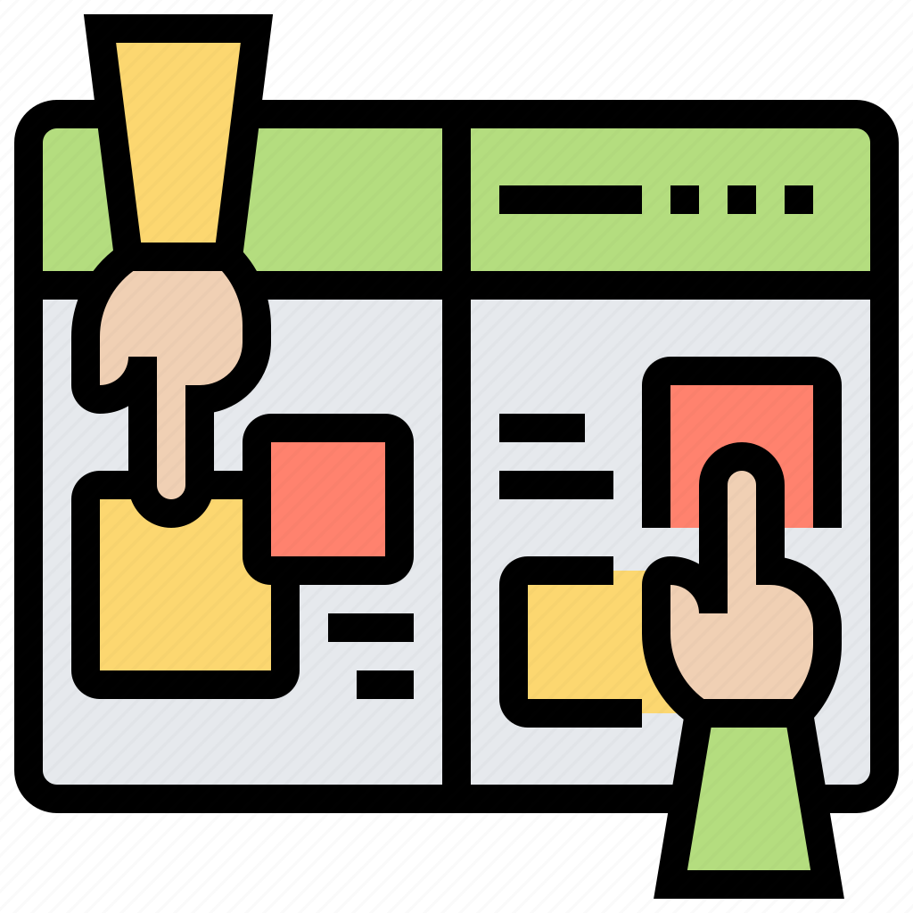

Player
It is a library that fully supports WebGL, allowing you to create rich, interactive graphics, cross-platform applications, and games without having to deal with browser or device compatibility.
learn more
Framework
MVVM Architect, In preparation.
in preparation